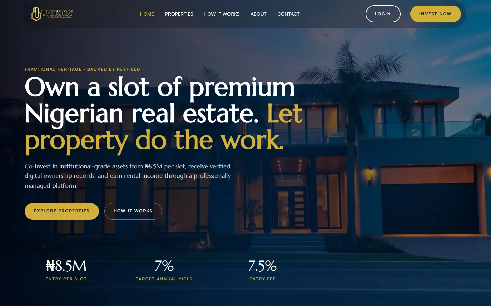
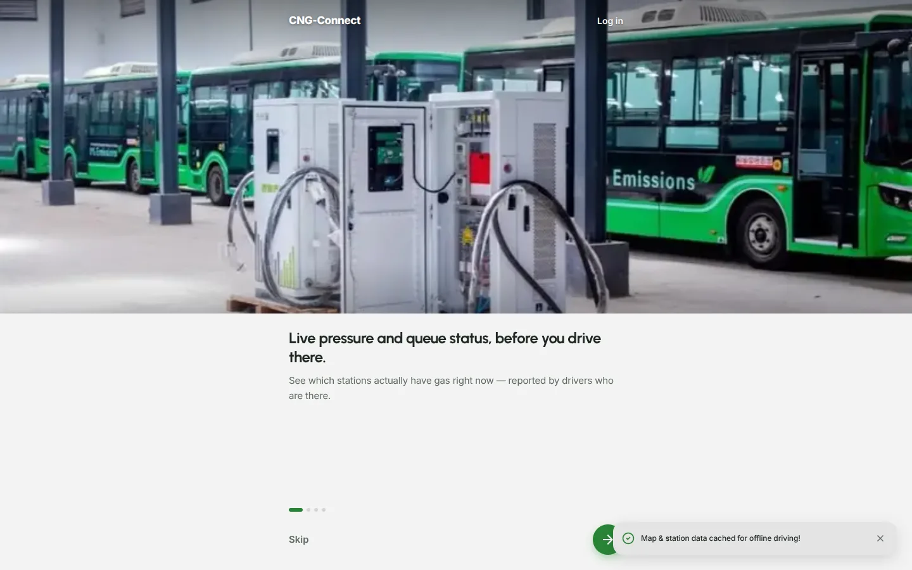

Making property investment feel as safe as a bank
I designed and built a platform that lets people own a share of property and follow how it performs.
- Role
- Product designer and developer (solo)
- Platform
- Responsive web
- Scope
- UX, design system, front-end build, investor dashboard, admin tooling
- Live
- useunitora.com ↗

Goal
Take a new investor from sign-up and identity checks to a first investment, then give them one clear place to track what they own.
Context
Unitora sells fractional shares in real estate. Buying a slice of a building is unfamiliar for most people, so the product has to feel as trustworthy as a bank, not like a property brochure.
Outcome
Live with 120 investor accounts and 180 investment records. The full journey, from two-step sign-up and four-step KYC to a live portfolio dashboard, runs on one design system shared with the public site.
Results
Unitora is the first digital platform for this client, so there is no earlier flow to compare conversion against. The time saved is my estimate, not a tracked metric.
Process
From paper files to a portal investors can trust
Before
Investments were managed with paper and physical documents. Investors had no single place to see what they owned or how it was performing.
After
A digital portal with track records, updates, certificates, and correspondence, all tied to the investor’s account.
- 01
The brief
The client wanted a fractional real estate ownership platform built on WordPress, so their team could edit it from the front end without writing code.
- 02
The user
Property investors who need a dashboard to manage their investments with Unitora, from first purchase to payouts.
- 03
Defining trust
Investors are handing over money for a share of a building. I translated trust into five things the product must show clearly.
Constraints
Undocumented onboarding. The client’s onboarding and KYC process was poorly documented, so the flow had to be worked out before it could be designed.
No-code client team. Everything had to stay editable in WordPress after handover.
Design
Portfolio value first, everything else one tap away
A six-item bottom navigation keeps every part of the portfolio one tap away.
Build
WordPress and Bricks, extended with custom PHP
The client’s team doesn’t code and needed to edit the platform themselves, so it runs on WordPress with Bricks Builder, extended with custom PHP where the product needed more than a page builder can give.
User-scoped endpoints and 11 or more custom data tags per page feed the portfolio, holdings, performance charts, certificates, and transaction ledger.
Each investment gets an automatic reference. Payments land in an admin queue to be verified before the holding appears.
Every deposit and investment in one list, with filters to find a single payment quickly.
Key decisions
Choices that shaped the product
-
1
Unit types became their own data, not duplicated tabs
PROBLEM
Each property page repeated hardcoded “2 bedroom” and “3 bedroom” tabs, so any change had to be made by hand in several places.
DECISION
Gave each unit type its own record, with price, yield, slots, gallery, and status, linked to its property and rendered by a query loop.
RESULT
Adding a unit type is now data entry, and every property page stays consistent.
-
2
One set of design tokens for the whole product
PROBLEM
Styles were spread across per-page CSS files and hardcoded values, so pages drifted from the live design.
DECISION
Moved all styling into global theme styles built on one token system.
RESULT
Marketing pages and the dashboard now change together when a token changes.
-
3
Launch with verified offline payments first
PROBLEM
Investors needed to be able to invest from day one.
DECISION
Shipped an offline payment flow with automatic references and an admin verification queue as the first phase.
RESULT
Every investment is checked by a person before it shows as a holding.
Result
Live at useunitora.com. One design system keeps new features consistent as the product grows.
Next case study →
CNG-Connect
Helping drivers find gas before they join the queue.
